VISÃO IMÓVEIS CRM imobiliário
Um CRM sob medida para uma imobiliária do sul de Minas Gerais: funil de imóveis e de clientes, cadastro de pessoas, triagem de pedidos e edição do site, ligados a um portal público. Projeto freelance que desenvolvi de ponta a ponta e que está em produção desde 2026.
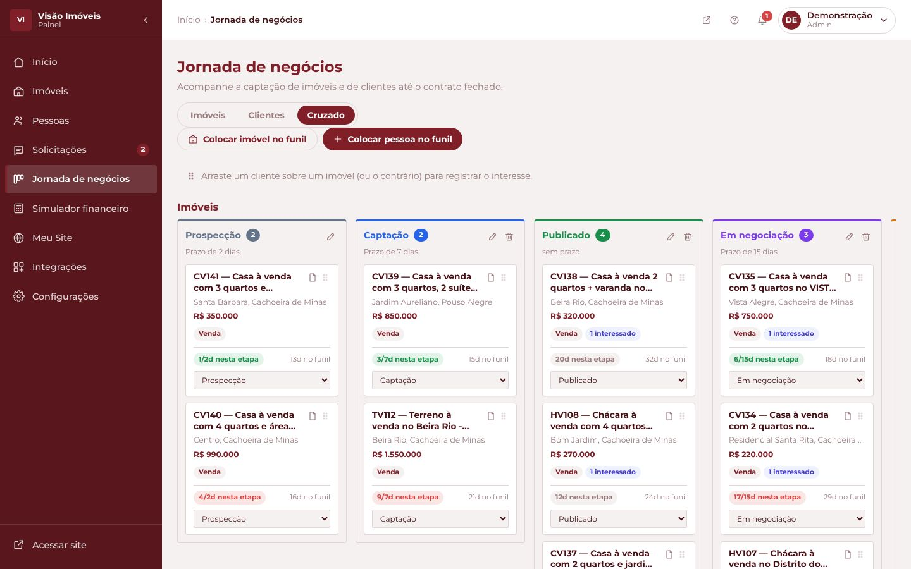
Sair de um CRM alugado para um sistema próprio
A imobiliária anunciava os imóveis num site montado pelo CRM de terceiros que usava. O corretor queria um site com a cara da marca e, principalmente, um CRM próprio para o dia a dia: cadastrar imóveis, acompanhar cada negociação do primeiro contato ao contrato, receber os pedidos de quem quer anunciar e editar o próprio site sem depender de ninguém.
Comecei pelo site público, migrei os 39 imóveis reais do site antigo e construí o painel e o backend em fases, sempre com o aval do cliente antes de cada uma. O roteiro do funil de negócios foi aprovado pelo cliente. Hoje todo o sistema roda em produção, com domínio próprio.
Um CRM feito para o jeito de trabalhar do corretor
O painel é a parte principal do projeto. Ele reúne imóveis, clientes e proprietários no mesmo lugar, e liga tudo ao site: o que o corretor muda aqui aparece para quem visita.
As telas do painel usam dados de demonstração. Clientes, solicitações e etapas são fictícios; os imóveis são os anúncios públicos do site.
Dois funis que se cruzam
Um funil acompanha o imóvel (da prospecção ao vendido) e outro acompanha o cliente (da captação ao contrato). Na visão cruzada, arrastar um cliente sobre um imóvel registra o interesse entre os dois.
- Etapas configuráveis: o corretor cria, renomeia, reordena e define o prazo de cada uma.
- Os dias na etapa saem de um histórico que nunca é apagado.
- Com uma proposta ativa, o imóvel vai sozinho para "Em negociação". A regra só avança, nunca volta.
- No celular, onde não dá para arrastar, cada card tem um seletor "Mover para".
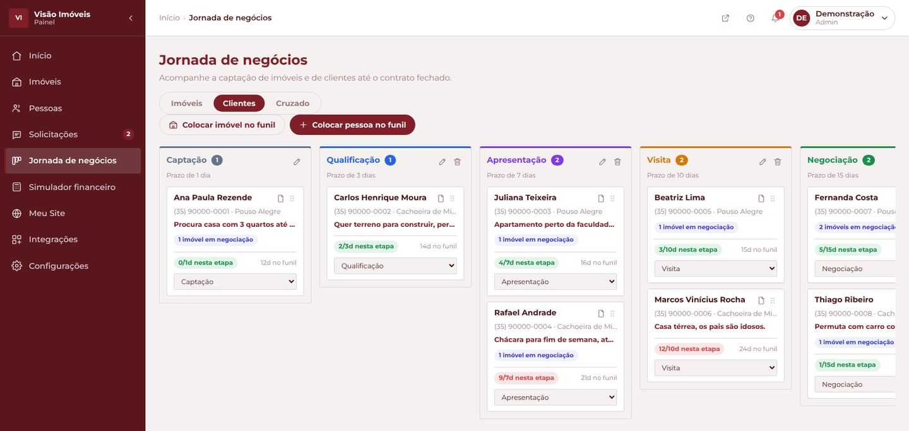
Tudo sobre o cliente num só lugar
A ficha mostra a etapa, o tempo no funil, os imóveis em que o cliente tem interesse e a situação de cada um (apresentado, visitou, proposta enviada).
- Vincular imóvel com busca e filtros por tipo e bairro.
- Observações internas, as mesmas do cadastro da pessoa.
- Histórico de cada mudança de etapa, com autor e data.
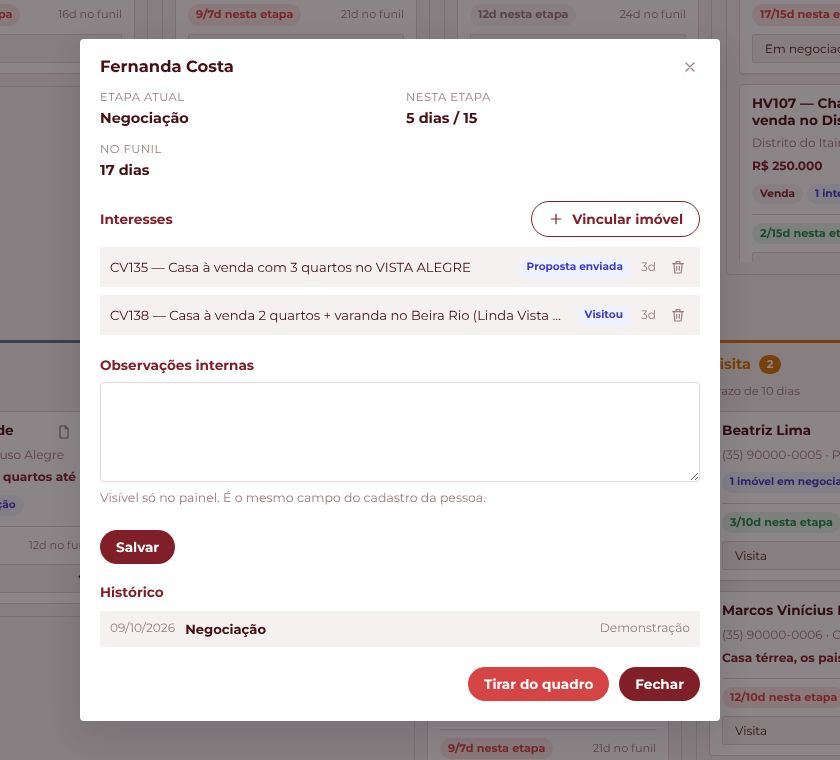
Do pedido no site ao imóvel cadastrado
Quem quer anunciar preenche um formulário no site. O pedido chega como notificação push e entra num quadro de triagem.
- O quadro só deixa mover o pedido para as etapas permitidas. As outras colunas nem acendem no arraste.
- Abrir o pedido marca como lido, igual a um e-mail.
- Um pedido aceito vira proprietário cadastrado e abre o cadastro do imóvel já preenchido.
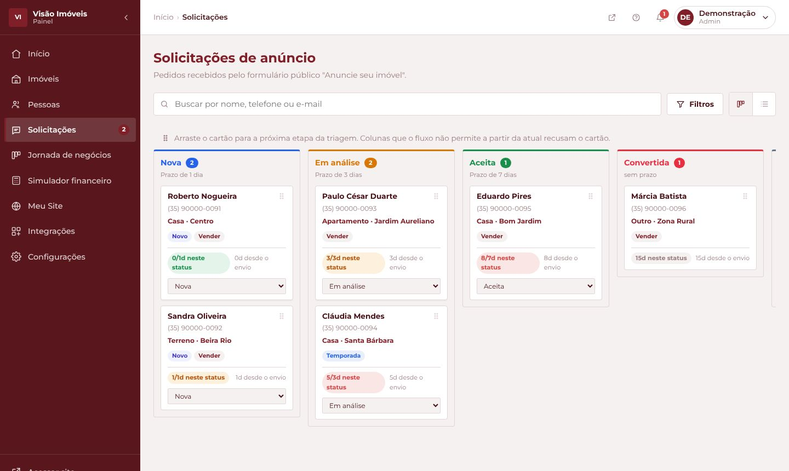
Carteira completa, com filtros que viram link
A listagem guarda filtros, ordem e página no endereço. Assim um link filtrado pode ser compartilhado, e os alertas do início abrem a lista já filtrada.
- Cadastro de imóvel em 8 etapas, com o redator de anúncio e o upload de fotos.
- Inativar pede um motivo, de uma lista definida com o cliente.
- Um único cadastro de pessoas com seis papéis: proprietário, inquilino, fiador, comprador, locatário e corretor.
- Exportação para CSV.
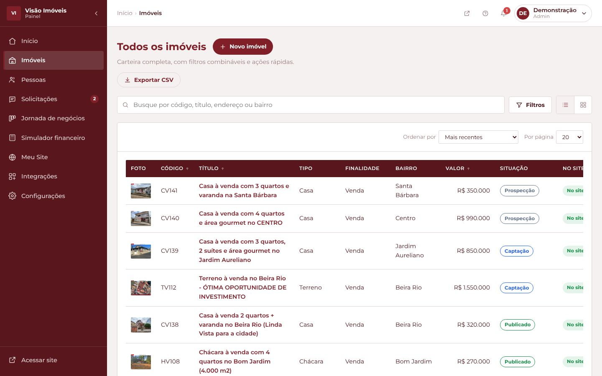
O dia do corretor numa tela
O início junta os números da carteira, alertas clicáveis (imóvel sem foto, sem publicar ou parado há mais de 60 dias) e um resumo do funil com os prazos estourados.
- Gráfico de cadastros por mês desenhado em SVG, sem biblioteca.
- Perfis de acesso com matriz de permissões, conferida também no servidor.
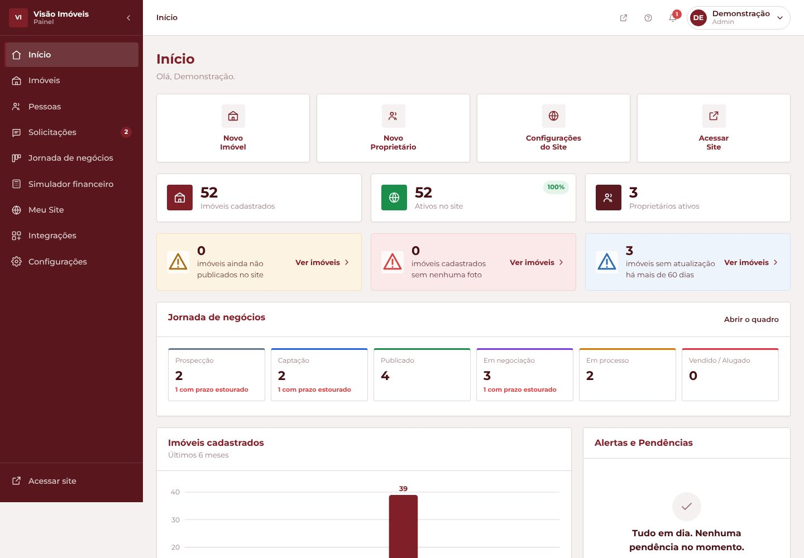
O corretor edita o site e imprime o anúncio
Em "Meu Site", o corretor muda cores, textos, imagens e a ordem dos blocos da página inicial, com prévia ao vivo. Nada vai para o ar até ele clicar em "Publicar".
Na ficha do imóvel, um botão gera a folha A4 do mural da imobiliária, com QR code para o anúncio online.
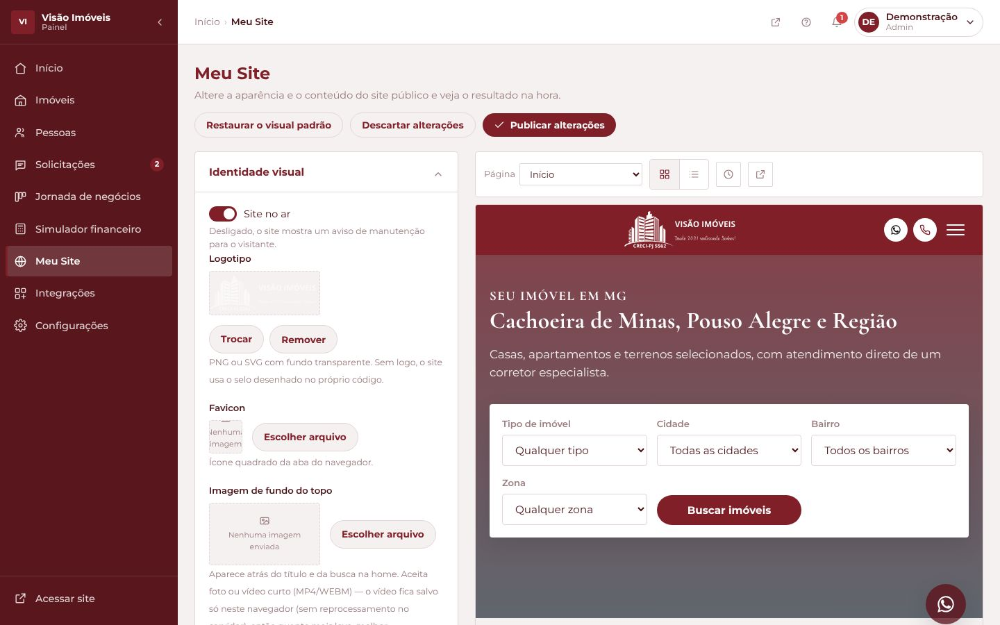
Stack enxuta, sem etapa de build
Front-end
HTML, CSS e JavaScript vanilla. O site público usa scripts simples; o painel usa ES Modules nativos. Nenhum framework, bundler ou npm.
Back-end
FastAPI, SQLAlchemy e migrações com Alembic, sobre PostgreSQL no Supabase. Fotos no Supabase Storage, convertidas para WebP com miniatura.
Entrega
Deploy automático no Render a cada push. Leaflet para o mapa da ficha, carregado por CDN só nas páginas que precisam.
Trabalho que o sistema passou a fazer sozinho
Posição do bairro no servidor
Ao salvar um imóvel, o backend descobre onde fica o bairro e desenha um círculo de área na ficha pública, sem nunca expor rua ou número.
Push de novas solicitações
Quando um proprietário pede para anunciar pelo site, o celular de quem administra o painel recebe a notificação na hora.
Vendido sai do site sozinho
Quando um imóvel chega a uma etapa do funil marcada como "não publica no site", como Vendido, ele some do site público na consulta seguinte.
Redator de anúncio
Monta título e descrição a partir dos campos do cadastro, com concordância de gênero ("Casa localizada", "no Centro", "na Faisqueira").
Mural com corte alinhado
A linha de corte da folha do mural cai sempre a 230,7 mm do topo, para várias folhas serem cortadas juntas. O texto se ajusta para caber sem empurrar a linha.
Compartilhar com prévia
O backend gera uma página com as tags Open Graph do imóvel, então o link chega no WhatsApp e no Facebook com foto, título e preço.
Escolhas que eu explicaria numa entrevista
O redator de anúncios não usa IA
Um anúncio de imóvel não pode inventar um dado, e um modelo de linguagem às vezes inventa. Por isso o texto é montado por regras a partir dos campos do cadastro: é previsível, funciona sem internet e só diz o que está cadastrado. O texto também é só uma sugestão; quem salva é o corretor.
Uma regra que parecia funcionar, mas não funcionava
No começo, a regra que esconde imóveis vendidos rodava no navegador e lia dados salvos localmente. Funcionava no computador do corretor, mas um visitante comum não tinha esses dados, então via tudo, até imóvel vendido. Quando o backend ficou pronto, levei a regra para a própria consulta SQL da API pública. Agora ela vale para todo mundo.
O mapa mostra o bairro, nunca o endereço
O cliente tinha um receio concreto: com o endereço exato, o comprador poderia procurar o proprietário e fechar negócio sem a imobiliária. Analisando o site antigo, vi que ele localizava o imóvel pelo número da casa. Aqui a API pública nem envia rua e número, e a posição é calculada por bairro, no servidor.
Na primeira versão, uma busca por texto achou uma loja com o mesmo nome do bairro e mostrou o endereço dela. Troquei a busca por uma posição fixa por bairro, que só aceita bairro de verdade e tem ajuste manual no painel.
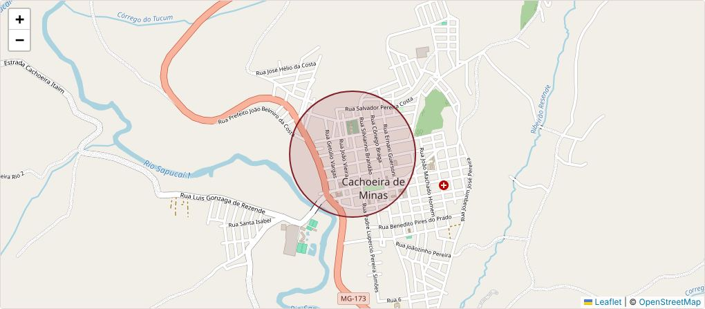
Sem framework, por escolha
O site é pequeno e o cliente não tem equipe técnica. Sem build, qualquer pessoa consegue abrir os arquivos e entender o que roda. No painel, que passou de 20 telas, usei ES Modules nativos para organizar os módulos sem precisar de bundler.
Desenvolvido em par com o Claude, com regras claras
Grande parte do código foi escrita junto com o Claude. O que fiz para isso dar certo num projeto real foi tratar a IA como uma dupla que precisa de contexto e de limites. O repositório tem um documento de regras com mais de mil linhas: o que é proibido (framework, build, link do site público para o painel), as convenções de nome, o modelo de dados e o histórico de cada decisão com o motivo.
Criei quatro agentes próprios, cada um com uma função:
Procura bugs de verdade e quebras de arquitetura nas mudanças.
Confere as regras rígidas do projeto. Só aponta, nunca corrige sozinho.
Sobe o servidor local e percorre os fluxos em várias larguras de tela.
Encontra código morto e duplicado.
Antes de dar uma mudança por pronta, ela era testada no navegador com Playwright, em várias larguras de tela, e conferida contra o banco local.
Do primeiro commit ao domínio próprio
- Primeiro commit: site público e estrutura do painel.
- Os 39 imóveis reais migrados do site antigo. O cliente autoriza o backend.
- O site público passa a ler os imóveis direto da API.
- Funil de negócios, configurações e "Meu Site" passam a ser salvos no servidor.
- Mudança para o domínio próprio, mural em PDF e página "Quem somos".
- Comissão em percentual ou valor fixo, últimos ajustes pedidos pelo cliente.
A vitrine que o painel alimenta
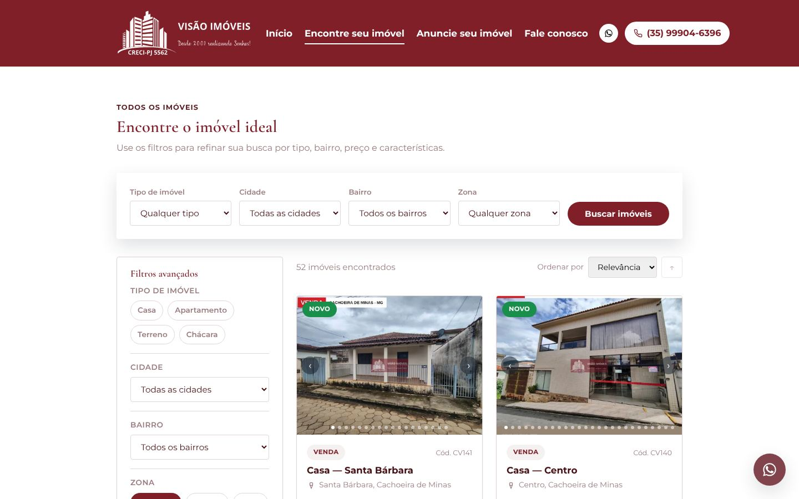
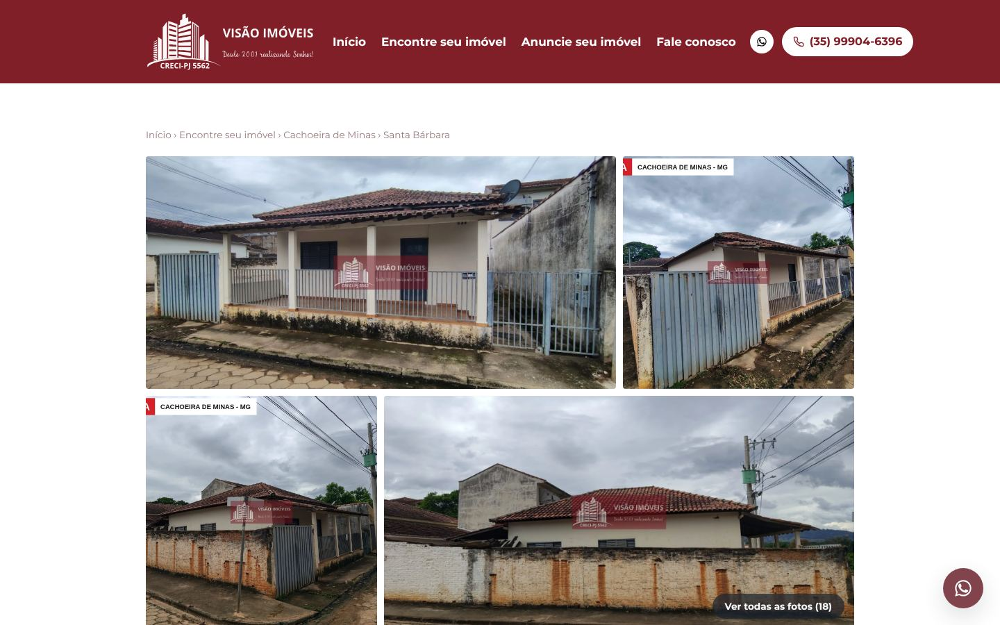
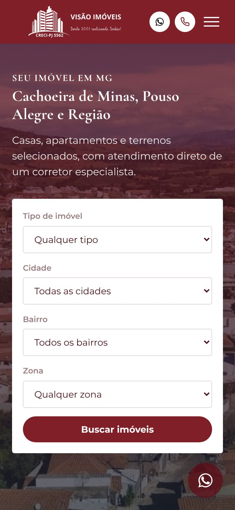